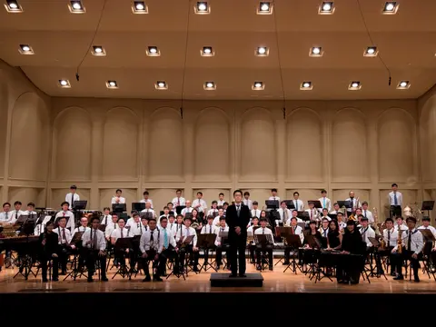
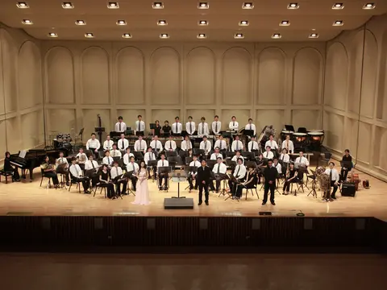
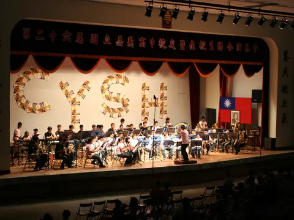
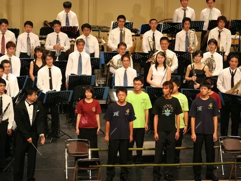
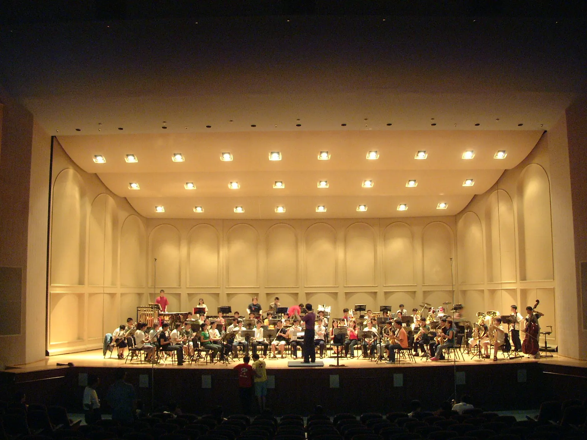
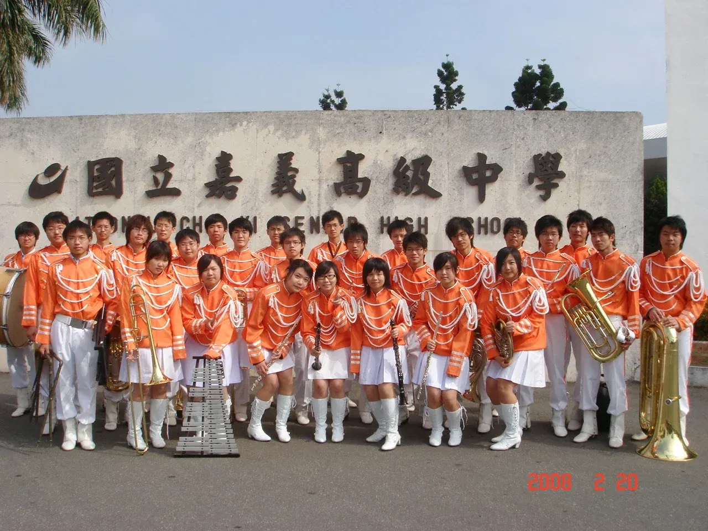
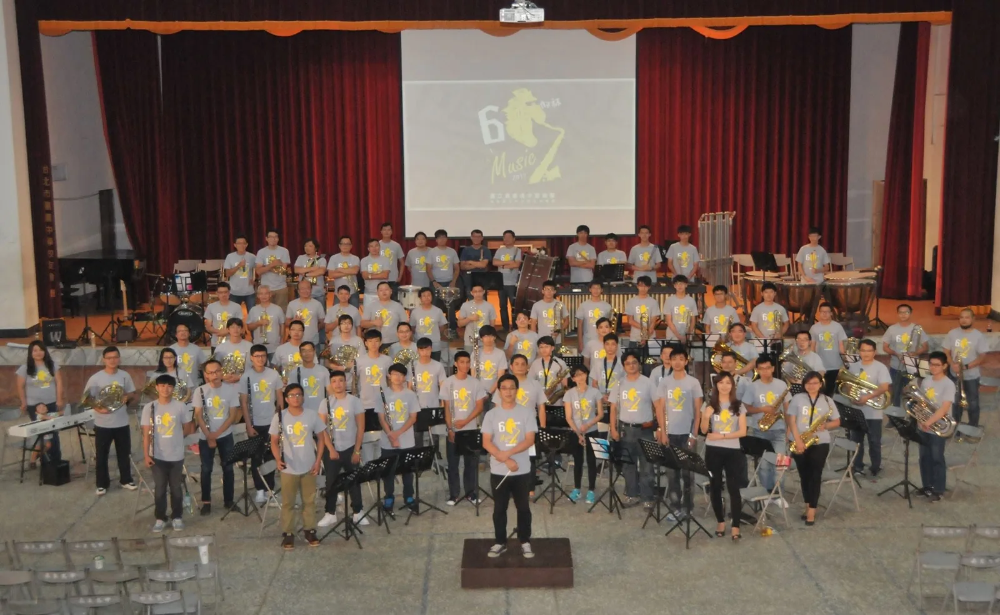
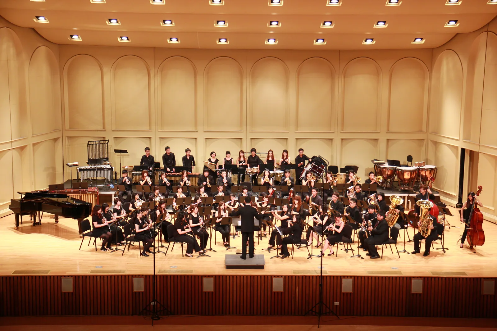

活動相簿
每一本相簿是一段完整的旅程——點進去，從團練走到舞台。相簿依年份由新到舊排列。

活動總覽：團練、彩排到 8/8 正式演出，逐場更新 進入相簿 →

嘉義高中／北港文化中心家湖廳，兩場完整曲目紀錄 進入相簿 →

嘉義市政府文化局音樂廳，完整節目冊紀錄 進入相簿 →

午後彩排．晚間正式演出｜5 張 進入相簿 →

後台花絮．正式演出．謝幕｜8 張 進入相簿 →

團練．音樂廳彩排．正式演出｜34 張 進入相簿 →
典藏：歷史影像
不限年代的珍貴老照片，持續蒐集整理中；累積足量後將另立相簿。


